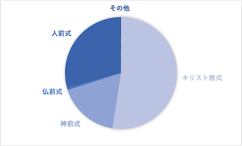

【11月ワーク】
人前式
人前式
人前式は、列席者へ結婚の意思を誓い、証人になってもらう挙式スタイル。神に誓うキリスト教式や神前式と違い、宗教色がないのが特徴。
最近になって増えたスタイルで、なじみのない年配ゲストも多いため、少なくとも親の承諾は得ておくのがよいとされている。
衣裳、式次第も特に決まったものはなく、自由にプランニングできる。宣誓文は自分たちの言葉で、挙式場所も自由に選んでOK。
演出次第で格調高い挙式にもアットホームな挙式にもアレンジできるのが魅力。
形式がない分、費用面でもリーズナブルに抑えることができる。
・宗教や格式にとらわれない
・形式や場所は全て自由
・挙式費用がリーズナブル
「ゼクシィ 結婚トレンド調査2020」によると挙式形式は「人前式」が増加の兆し。
人前式実施者は形式にとらわれず、招待客と一緒に場をつくりたい意識が比較的高い。
挙式形式は「人前式」が28.5％で2014年調査から4.3ポイント増加。
一方、「キリスト教式（教会式）」は51.7％で2014年調査から3.8ポイント減少。
挙式、披露宴・ウエディングパーティの演出を決定する際に心がけたことを挙式形式別にみると、全国（推計値）に比べて、
人前式実施者は「形式にとらわれないこと」（10.5ポイント差）、
「アットホームなムードになること」「列席者も参加できるようにすること」（ともに8.6ポイント差）、
「ありきたりにならないこと」（5.7ポイント差）、「自分らしさを表現できること」（5.1ポイント差）の割合が高い。

「ゼクシィ 結婚トレンド調査2020」によると
キリスト教式は51.7%
人前式は、28.5%、
神前式は17.4%
仏前式0.6%
その他は、0.4%となっている。